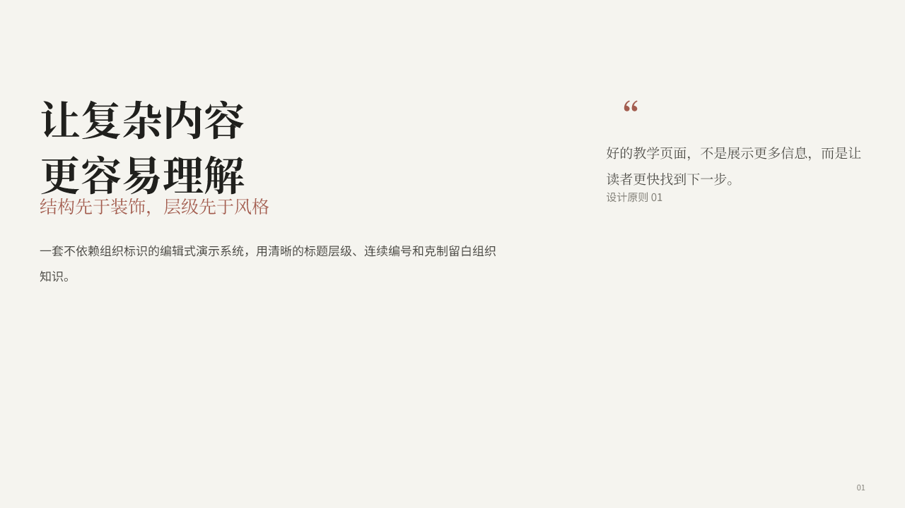
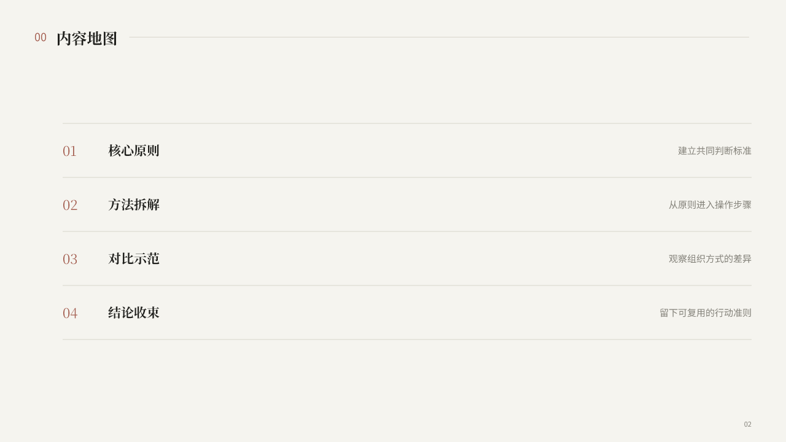
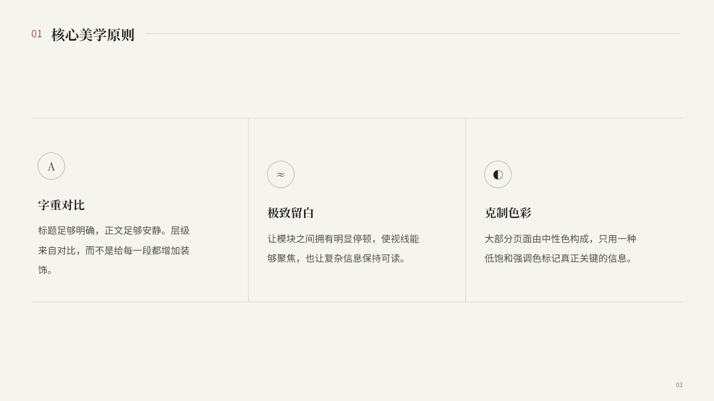
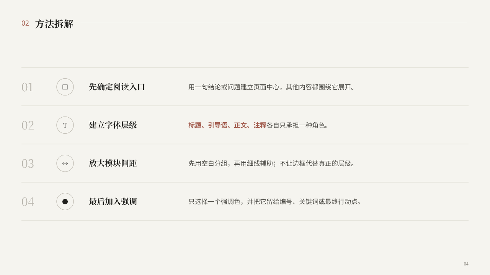
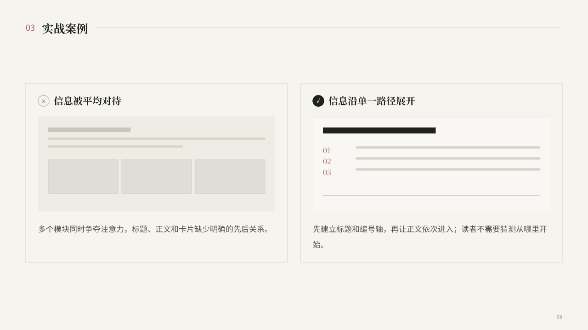
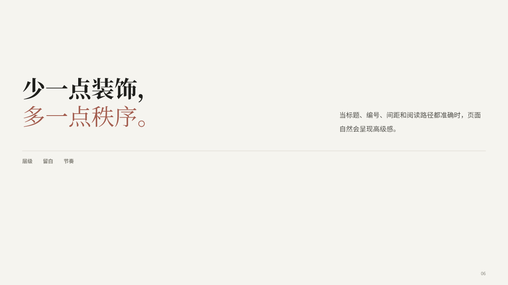

中性编辑排版 001｜Native/PPT 二审
六页均为原生可编辑文字、线条和几何对象；本页展示最终 PPTX 的逐页渲染。
等待 PPT 确认打开 PPTX
01｜封面大标题＋强调副标题＋侧栏引语

02｜内容地图连续编号与细线导航

03｜核心美学原则同级原则与符号索引

04｜方法拆解连续步骤与单一强调色

05｜实战案例自然高度卡片在内容带内垂直居中

06｜收束页结论＋关键词
